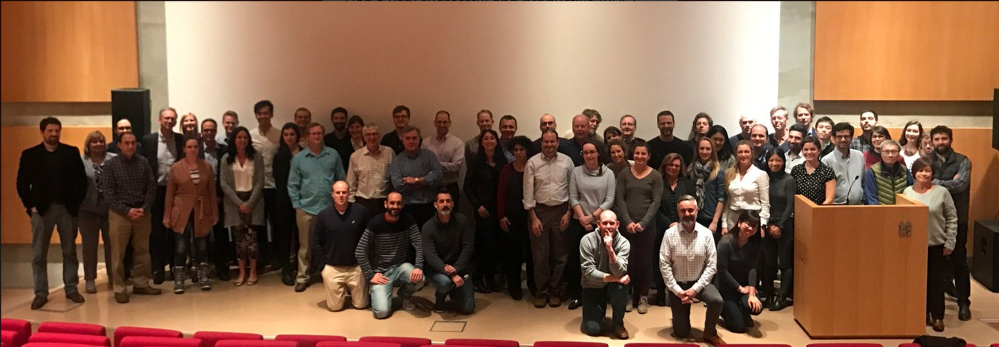
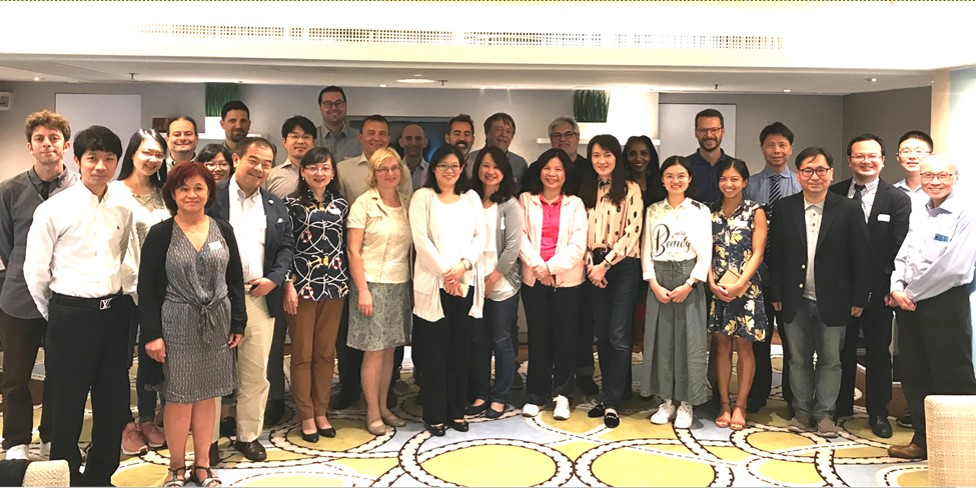

East Asian Parkinson’s Disease Genomics Consortium (EAPDGC) branches out from The International Parkinson Disease Genomics Consortium. We have out preparation meeting in Hong Kong in Oct 2018. With support from Michael J Fox Foundation, our Consortium was formally rolled out in Sept 2019. The partner centers signed a collaborative agreement in 2020 and array genotyping starts in 2021.
(IPDGC meeting in March, 2018 in Iceland ( prioritized studies in ‘under-represented populations))
(Preparatory meeting meeting in Honh kong 2018 Oct)
Priority will be given translating the findings to application in the local populations. We support distribution of educational materials and research tools in local languages to patients, health workers, and scientists.